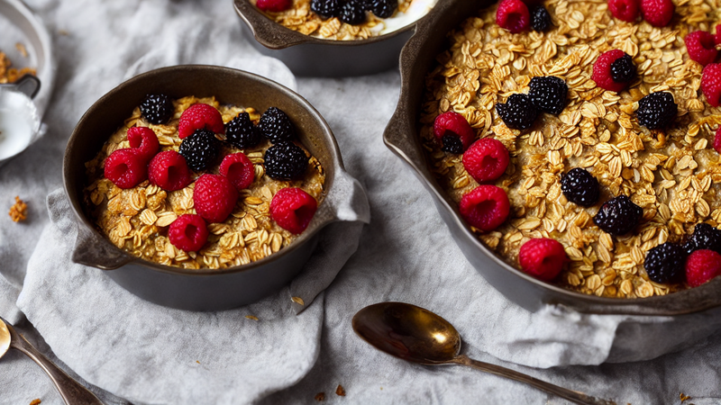
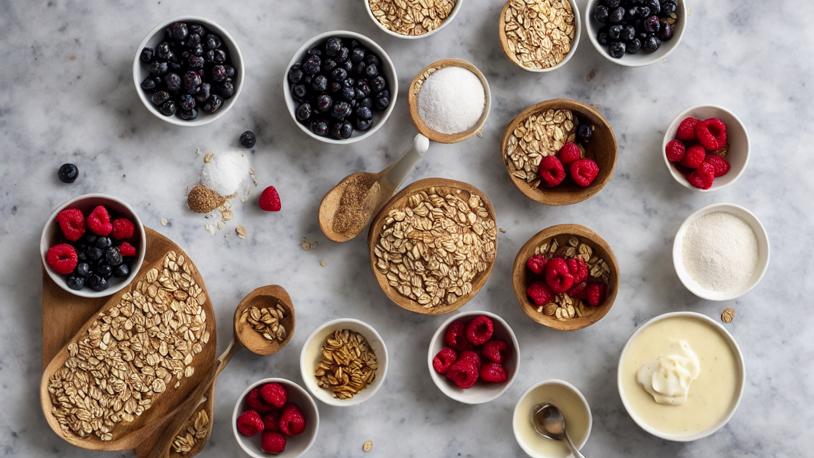
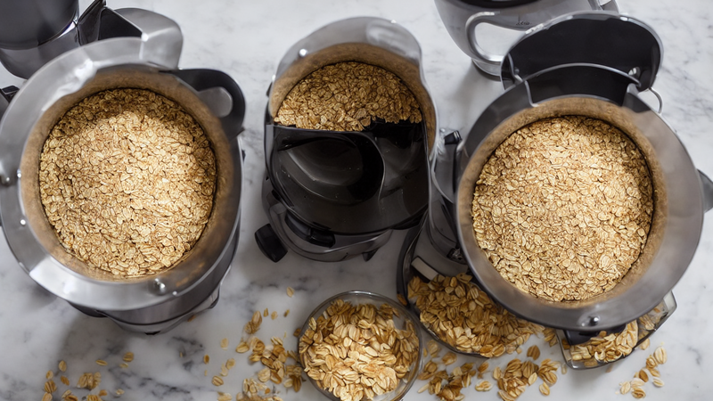
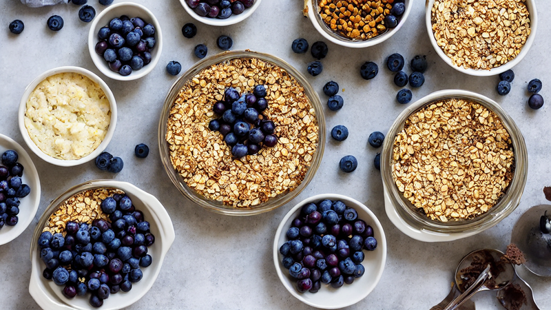
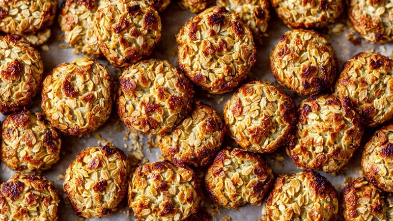
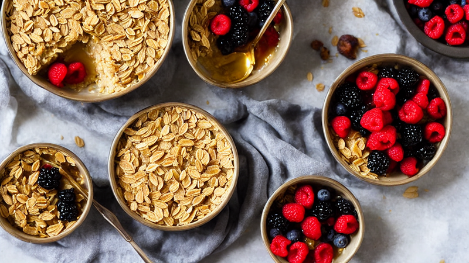
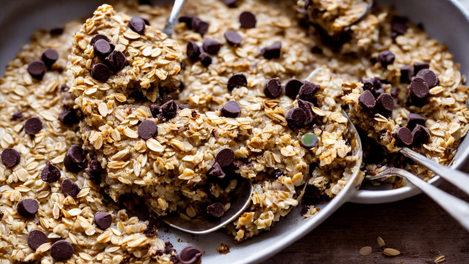
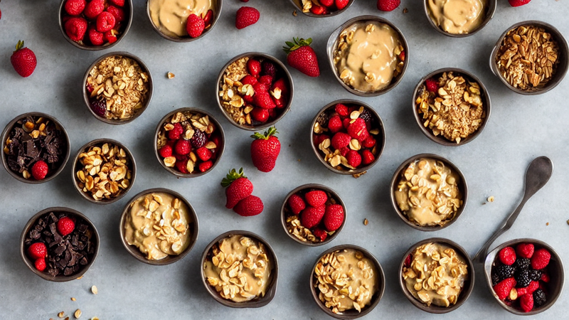

Baked Oats | The Healthy Breakfast That Tastes Like Cake
These Baked Oats taste like eating cake for breakfast but are actually healthy! Naturally sweetened, packed with fiber, and endlessly customizable. Blend, bake, and enjoy the most satisfying breakfast you'll make all week. Meal prep friendly too! #BakedOats
Instructions

What if I told you that you could eat cake for breakfast and it's actually healthy? These Baked Oats went viral for a reason. Let's make them!

Here's what you need: 1 cup rolled oats, 1 ripe banana, 1 egg, half a cup of milk, 2 tablespoons maple syrup, 1 teaspoon vanilla extract, half a teaspoon each of baking powder and cinnamon, a pinch of salt, and your favorite toppings.

Add the oats, banana, egg, milk, maple syrup, vanilla, baking powder, cinnamon, and salt to a blender. Blend on high for 30 seconds until completely smooth like a thick pancake batter.

Pour the batter into a greased oven-safe ramekin or small baking dish. Now add your toppings! Chocolate chips, blueberries, sliced banana, or peanut butter swirls. Go wild!

Bake at 350 degrees Fahrenheit for 25 to 30 minutes until the top is golden brown and set. The center should be slightly soft but not jiggly.

Let it cool for just 3 minutes. The edges will be perfectly crispy while the center stays soft and cakey. Top with a drizzle of maple syrup and extra fruit.

Scoop into it with a spoon and watch that perfect cakey texture. It tastes like banana bread met a muffin and had the best breakfast baby ever. You'll make this every morning!

Pro tip: make a batch of 5 on Sunday and reheat all week for the easiest meal prep breakfast. Subscribe for more healthy recipes that actually taste amazing!